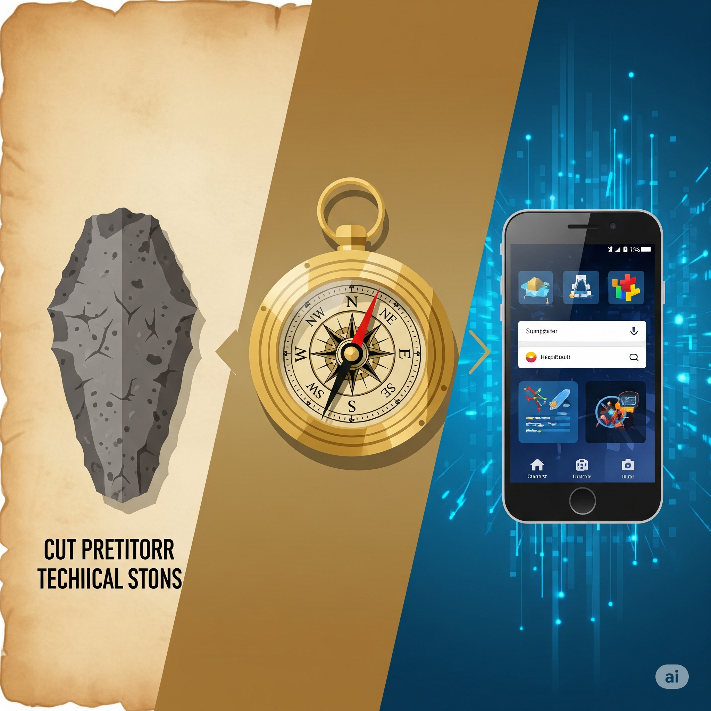

🎭SITUATION DÉCLENCHANTE
Lucas vient de casser son drône de loisir en le faisant atterrir trop brutalement. Déçu, il s'apprête à le jeter quand sa sœur Emma l'arrête : "Attends ! On peut peut-être le réparer !"
Ensemble, ils observent les morceaux éparpillés : des hélices, un moteur, une batterie, des fils colorés... "Mais comment tout ça fonctionne ensemble ?" se demande Lucas.
Emma sourit : "C'est comme un puzzle ! Chaque pièce a un rôle précis. Si on comprend comment ça marche, on pourra peut-être le réparer... ou même l'améliorer !"
🔍 Et si on découvrait ensemble les secrets cachés dans les objets de notre quotidien ?

🎯OBJECTIFS PÉDAGOGIQUES : "Ta mission, si tu l'acceptes..."
📚 Compétences à maîtriser :
- ✅ Identifier les différents composants (pièces) d'un objet technique simple
- ✅ Décrire la fonction de chaque composant principal
- ✅ Représenter les liens entre les composants par un schéma simple
🧠 Savoirs et connaissances à acquérir :
- 🎯 Fonction d'usage globale
- ⚙️ Fonctions techniques des composants
- 📐 Représentation par schéma ou croquis légendé
- 🔗 Notion de système (un ensemble d'éléments en interaction)
- 🧪 Matériaux principaux (plastique, métal)
(verre et PVC)
(coton)
(plastique)
(aluminium)
(de loisir)
🌟INTRODUCTION ET PROBLÉMATIQUE
Depuis la préhistoire, l'être humain fabrique des objets pour répondre à ses besoins. D'abord simples (une pierre taillée), ils sont devenus de plus en plus complexes (un smartphone contient des milliards de composants !).
Mais même les objets "simples" de notre quotidien cachent une ingéniosité remarquable. Une fenêtre n'est pas qu'une vitre, un t-shirt n'est pas qu'un tissu, et un drône n'est pas qu'un jouet volant.
🎯 Problématique centrale : Comment les différents composants d'un objet technique s'organisent-ils et interagissent-ils pour répondre à un besoin précis ?
Plan du cours : Nous allons explorer 5 concepts clés pour comprendre l'anatomie des objets, en utilisant nos 5 objets d'étude comme exemples concrets.
💡DÉVELOPPEMENT DU COURS - EXPLORATION EN PROFONDEUR
1. Fonction d'usage globale
a) 🎓 Définition Académique et Enjeux
La fonction d'usage globale est le service principal rendu par un objet technique à son utilisateur. Elle répond à la question : "À quoi sert cet objet ?". Cette notion est fondamentale car elle guide toute la conception de l'objet et détermine ses caractéristiques essentielles.
b) 🧠 Analogie et Simplification Pédagogique
La fonction d'usage, c'est comme le "super-pouvoir" de l'objet ! 🦸♀️ Imagine que chaque objet soit un super-héros avec une mission spéciale : la fenêtre est le "Gardien de la Lumière", le t-shirt est le "Protecteur du Corps", et le drône est "l'Explorateur des Airs" !
c) 📱 Étude de Cas Concrète
Nos 5 objets et leurs fonctions d'usage :
- 🪟 Fenêtre : Permettre le passage de la lumière tout en isolant de l'extérieur
- 👕 T-shirt : Couvrir et protéger le torse
- 🍼 Bouteille plastique : Contenir et transporter des liquides
- 🥫 Canette aluminium : Conserver et distribuer des boissons
- 🚁 Drône de loisir : Voler et capturer des images aériennes
d) 🛠️ Décortiquage Technique - "Sous le Capot"
Mini-tutoriel : Identifier la fonction d'usage
- Prends l'objet en main (ex: une bouteille)
- Pose-toi la question : "Quel problème résout-il ?"
- Formule la réponse avec un verbe d'action + complément
- Vérifie : sans cette fonction, l'objet n'a plus de raison d'exister
Bouteille → "Contenir des liquides" → Sans ça, ce n'est plus qu'un morceau de plastique !
e) 🤔 Points de Vigilance et Erreurs à Éviter
- ❌ Erreur 1 : Confondre fonction d'usage et caractéristique (Une bouteille "est bleue" n'est pas sa fonction !)
- ❌ Erreur 2 : Être trop précis ("contenir du jus d'orange" au lieu de "contenir des liquides")
- ❌ Erreur 3 : Oublier l'utilisateur (la fonction doit répondre à UN besoin humain)
f) 💡 Le Saviez-Vous ? / Anecdote Technologique
La première bouteille en plastique a été créée en 1947 ! Avant, on utilisait uniquement du verre. Le plastique a révolutionné le transport des liquides car il est incassable et ultra-léger. Une bouteille plastique vide ne pèse que 20g contre 300g pour le verre ! 🍼
g) 🤝 Ponts Interdisciplinaires
- 📚 Français : Formuler précisément une fonction (sujet + verbe + complément)
- 🏛️ Histoire : Évolution des besoins humains à travers les époques
- 🌍 Géographie : Adaptation des objets selon les climats (fenêtres doubles en Sibérie)
h) 🚀 Pour les Experts (Approfondissement)
Défi créatif : Invente un nouvel objet en combinant les fonctions d'usage de deux objets existants ! Par exemple : bouteille + drône = drone livreur de boissons ! 🚁🥤
Métier à découvrir : Designer produit - Ces professionnels imaginent de nouvelles fonctions d'usage pour améliorer notre quotidien.
2. Fonctions techniques des composants
a) 🎓 Définition Académique et Enjeux
Les fonctions techniques sont les actions réalisées par chaque composant d'un objet pour contribuer à la fonction d'usage globale. Chaque pièce a un rôle précis et indispensable. Comprendre ces fonctions permet de réparer, améliorer ou concevoir des objets.
b) 🧠 Analogie et Simplification Pédagogique
Un objet technique, c'est comme une équipe de football ! ⚽ Chaque joueur (composant) a un poste et un rôle : le gardien protège, les défenseurs bloquent, les attaquants marquent... Tous ensemble, ils gagnent le match (fonction d'usage) !
c) 📱 Étude de Cas Concrète
🚁 Anatomie du drône de loisir :
- Hélices : Créer la portance (pousser l'air vers le bas)
- Moteurs : Faire tourner les hélices
- Batterie : Fournir l'énergie électrique
- Châssis : Maintenir tous les composants ensemble
- Caméra : Capturer des images
- Circuit de contrôle : Gérer le vol et la stabilité
🪟 Anatomie de la fenêtre :
- Vitrage : Laisser passer la lumière, isoler thermiquement
- Cadre PVC : Maintenir le vitrage, assurer l'étanchéité
- Joints : Empêcher l'air et l'eau de passer
- Poignée : Permettre l'ouverture/fermeture
- Charnières : Permettre la rotation
d) 🛠️ Décortiquage Technique - "Sous le Capot"
Mini-tutoriel : Analyser les fonctions techniques
- 📸 Observe ou photographie l'objet sous tous les angles
- 🔍 Identifie chaque composant visible
- ❓ Pour chaque composant, demande-toi : "Que se passerait-il s'il n'était pas là ?"
- ✍️ Note la fonction avec un verbe d'action
Exemple avec la canette :
Corps cylindrique → Contenir le liquide
Couvercle → Fermer hermétiquement
Languette → Permettre l'ouverture facile
e) 🤔 Points de Vigilance et Erreurs à Éviter
- ❌ Erreur 1 : Dire ce que c'est au lieu de ce que ça fait ("C'est du plastique" vs "Protéger le contenu")
- ❌ Erreur 2 : Oublier les composants cachés (joints, vis, circuits internes)
- ❌ Erreur 3 : Penser qu'un composant n'a qu'une seule fonction
f) 💡 Le Saviez-Vous ? / Anecdote Technologique
Un t-shirt en coton contient environ 2 km de fil ! 🧵 Ce fil est tissé selon un motif précis qui donne au tissu ses propriétés : douceur, respirabilité, extensibilité. La fonction "absorber la transpiration" du coton est due à la structure creuse de ses fibres qui agissent comme des micro-éponges !
g) 🤝 Ponts Interdisciplinaires
- 🔬 SVT : Comparaison avec les organes du corps humain et leurs fonctions
- ⚡ Physique : Forces, énergie, mouvement dans les mécanismes
- 🎨 Arts : Harmonie entre forme et fonction dans le design
h) 🚀 Pour les Experts (Approfondissement)
Projet : Choisis un objet cassé chez toi. Identifie le composant défaillant et sa fonction. Propose une solution de réparation ou d'amélioration !
Innovation : Les drones modernes intègrent l'IA pour éviter les obstacles automatiquement. Nouvelle fonction technique : "Analyser l'environnement en temps réel".
3. Représentation par schéma ou croquis légendé
a) 🎓 Définition Académique et Enjeux
Un schéma technique est une représentation simplifiée d'un objet qui met en évidence ses composants et leurs relations. Le croquis légendé ajoute des annotations explicatives. Ces outils de communication technique sont essentiels pour transmettre des idées complexes de manière claire et universelle.
b) 🧠 Analogie et Simplification Pédagogique
Un schéma technique, c'est comme une carte au trésor ! 🗺️ Au lieu de montrer tous les détails de l'île, elle montre seulement l'essentiel : le chemin, les dangers, et bien sûr, l'emplacement du trésor. Le schéma fait pareil : il garde seulement les infos importantes !

c) 📱 Étude de Cas Concrète
Schéma simplifié d'une bouteille plastique :
Bouchon (vissé)
|
Goulot (fileté)
|
╭─────────────╮
│ │ ← Corps (PET)
│ LIQUIDE │
│ │
╰─────────────╯
Fond
(renforcé)
Légendes : PET = Polyéthylène téréphtalate (type de plastique)
d) 🛠️ Décortiquage Technique - "Sous le Capot"
Mini-tutoriel : Créer un schéma technique efficace
- ✏️ Dessine les contours simplifiés (formes géométriques de base)
- ➕ Ajoute les composants principaux à l'intérieur
- ➡️ Trace des flèches pour montrer les connexions
- 📝 Légende chaque élément avec son nom et sa fonction
- 🎨 Utilise des couleurs pour différencier les matériaux
e) 🤔 Points de Vigilance et Erreurs à Éviter
- ❌ Erreur 1 : Vouloir tout dessiner en détail (un schéma n'est PAS une photo !)
- ❌ Erreur 2 : Oublier les légendes (un schéma muet ne sert à rien)
- ❌ Erreur 3 : Ne pas respecter les proportions approximatives
f) 💡 Le Saviez-Vous ? / Anecdote Technologique
Léonard de Vinci était un maître du croquis technique ! 🎨 Ses schémas d'hélicoptères et de parachutes, dessinés 500 ans avant leur invention réelle, étaient si précis que des ingénieurs modernes ont pu les construire en suivant ses plans !
g) 🤝 Ponts Interdisciplinaires
- 🎨 Arts Plastiques : Techniques de dessin, perspective, proportions
- 📐 Mathématiques : Géométrie, échelles, mesures
- 🗺️ Géographie : Lecture de cartes et de légendes
h) 🚀 Pour les Experts (Approfondissement)
Défi : Crée un schéma éclaté du drône montrant tous ses composants séparés mais positionnés comme s'ils allaient s'assembler. Inspire-toi des notices IKEA !
Outil pro : Les ingénieurs utilisent des logiciels de CAO (Conception Assistée par Ordinateur) comme SolidWorks ou FreeCAD.
4. Notion de système (un ensemble d'éléments en interaction)
a) 🎓 Définition Académique et Enjeux
Un système technique est un ensemble organisé d'éléments en interaction pour réaliser une fonction globale. Chaque élément influence et est influencé par les autres. Cette approche systémique est fondamentale pour comprendre la complexité des objets modernes et résoudre les pannes.
b) 🧠 Analogie et Simplification Pédagogique
Un système, c'est comme un orchestre ! 🎼 Chaque musicien (composant) joue sa partition, mais c'est l'harmonie de l'ensemble qui crée la musique. Si un violoniste s'arrête, toute la symphonie est perturbée !
c) 📱 Étude de Cas Concrète
🚁 Le drône comme système :
ENTRÉES → [SYSTÈME DRÔNE] → SORTIES
- Entrées : Énergie (batterie), Commandes (télécommande), Air
- Système : Moteurs + Hélices + Contrôleur + Capteurs
- Sorties : Vol, Images/Vidéos, Chaleur, Bruit
Si UN élément faillit, tout le système s'arrête !
d) 🛠️ Décortiquage Technique - "Sous le Capot"
Mini-tutoriel : Analyser un objet comme système
- 📥 Identifie les ENTRÉES (qu'est-ce qui rentre dans l'objet ?)
- ⚙️ Liste les COMPOSANTS qui interagissent
- 📤 Repère les SORTIES (qu'est-ce qui sort de l'objet ?)
- 🔄 Trace les FLUX (énergie, matière, information)
Exemple - Système "Canette" :
Liquide sous pression → [Corps + Couvercle + Languette] → Boisson accessible
e) 🤔 Points de Vigilance et Erreurs à Éviter
- ❌ Erreur 1 : Analyser chaque pièce isolément sans voir les interactions
- ❌ Erreur 2 : Oublier les flux invisibles (information, chaleur)
- ❌ Erreur 3 : Ne pas identifier toutes les entrées/sorties
f) 💡 Le Saviez-Vous ? / Anecdote Technologique
Le corps humain est le système le plus complexe que nous connaissions ! Il contient 37 000 milliards de cellules qui communiquent en permanence. Un t-shirt doit s'adapter à ce super-système : évacuer l'humidité, laisser passer l'air, suivre les mouvements... 👕
g) 🤝 Ponts Interdisciplinaires
- 🧬 SVT : Écosystèmes, chaînes alimentaires, corps humain
- 💻 Mathématiques : Logique, diagrammes, relations
- 🌍 Géographie : Systèmes urbains, réseaux de transport
h) 🚀 Pour les Experts (Approfondissement)
Réflexion : Une fenêtre fait partie du système "maison". Quelles sont ses interactions avec le chauffage, la ventilation, la sécurité ?
Concept avancé : La "pensée systémique" est utilisée pour résoudre les problèmes complexes comme le changement climatique.
5. Matériaux principaux (plastique, métal)
a) 🎓 Définition Académique et Enjeux
Les matériaux sont les substances qui constituent les objets techniques. Leurs propriétés (résistance, légèreté, conductivité...) déterminent les usages possibles. Le choix des matériaux est crucial pour la performance, le coût et l'impact environnemental des objets.
b) 🧠 Analogie et Simplification Pédagogique
Les matériaux, c'est comme les ingrédients d'une recette ! 👨🍳 Pour faire un gâteau moelleux, il faut de la farine. Pour un gâteau croquant, des amandes. Chaque matériau apporte ses "super-pouvoirs" à l'objet !
c) 📱 Étude de Cas Concrète
Nos objets et leurs matériaux :
| Objet | Matériaux | Propriétés clés |
|---|---|---|
| 🪟 Fenêtre | Verre + PVC | Transparent + Isolant |
| 👕 T-shirt | Coton | Absorbant + Doux |
| 🍼 Bouteille | PET (plastique) | Léger + Étanche |
| 🥫 Canette | Aluminium | Léger + Recyclable |
| 🚁 Drône | Plastique + Métal | Résistant + Léger |
d) 🛠️ Décortiquage Technique - "Sous le Capot"
Mini-tutoriel : Tester les propriétés des matériaux
- 🔍 Test visuel : Transparent ? Opaque ? Brillant ?
- ✋ Test tactile : Dur ? Mou ? Lisse ? Rugueux ?
- ⚖️ Test de masse : Lourd ? Léger ?
- 💧 Test d'absorption : Absorbe l'eau ? Imperméable ?
- 🔥 Test thermique : Conduit la chaleur ? Isolant ?
e) 🤔 Points de Vigilance et Erreurs à Éviter
- ❌ Erreur 1 : Penser qu'un matériau = une seule propriété
- ❌ Erreur 2 : Ignorer l'impact environnemental du matériau
- ❌ Erreur 3 : Oublier que les propriétés peuvent changer (plastique au soleil)
f) 💡 Le Saviez-Vous ? / Anecdote Technologique
L'aluminium était plus précieux que l'or au 19e siècle ! Napoléon III servait ses invités les plus prestigieux avec des couverts en aluminium. Aujourd'hui, on en fait 60 millions de canettes par jour ! Le secret ? L'électricité a rendu sa production abordable. 🥫⚡
g) 🤝 Ponts Interdisciplinaires
- 🧪 Physique-Chimie : Structure atomique, liaisons, propriétés
- 🌱 SVT : Matériaux naturels vs synthétiques, biodégradabilité
- 🏛️ Histoire : Âges des matériaux (pierre, bronze, fer, plastique)
h) 🚀 Pour les Experts (Approfondissement)
Innovation : Les matériaux du futur ! Graphène (200x plus résistant que l'acier), plastiques biodégradables à base d'algues, métaux à mémoire de forme...
Métier : Ingénieur matériaux - Invente les matériaux de demain pour des objets plus performants et écologiques.
🔮AVENIR ET PERSPECTIVES

🚀 Innovations en cours et à venir
- Objets connectés (IoT) : Ta fenêtre qui s'ouvre automatiquement quand il fait trop chaud
- Matériaux intelligents : T-shirts qui changent de couleur selon ta température
- Impression 3D : Fabriquer des objets personnalisés à la maison
- Biomimétisme : S'inspirer de la nature (drone-colibri, verre autonettoyant comme les feuilles de lotus)
🌍 Impacts sur la société
- Économie circulaire : Concevoir pour recycler (canettes 100% recyclables à l'infini)
- Personnalisation : Chaque objet adapté à son utilisateur
- Réparabilité : Lutter contre l'obsolescence programmée
- Nouveaux métiers : Réparateur de drones, designer d'objets connectés
🌱 Défis environnementaux
- Plastiques : Remplacer le pétrole par des sources végétales
- Métaux rares : Recycler les composants électroniques
- Énergie : Objets autonomes (panneaux solaires intégrés)
- Durabilité : Concevoir pour durer 50 ans, pas 5 !
🎯CONCLUSION
Nous avons exploré ensemble l'anatomie des objets techniques, depuis leur fonction d'usage globale jusqu'aux matériaux qui les composent. Comme Lucas et Emma avec leur drône, nous avons appris à regarder au-delà des apparences.
💡 Réponse à notre problématique : Les composants d'un objet technique s'organisent en système, où chaque élément a une fonction technique précise. Ensemble, ils interagissent pour réaliser la fonction d'usage globale. Le choix des matériaux et la représentation schématique nous permettent de comprendre, réparer et améliorer ces objets !
Désormais, tu ne regarderas plus jamais une simple bouteille ou une fenêtre de la même façon. Tu sais qu'elles cachent une ingéniosité remarquable, fruit de siècles d'innovations. Et qui sait ? Peut-être inventeras-tu l'objet révolutionnaire de demain ! 🚀
📝EXERCICES D'AUTO-ÉVALUATION
Exercice 1 : L'enquêteur d'objets 🔍 (Glisser-Déposer)
Fais glisser chaque composant du stylo dans la case de sa fonction technique correspondante.
Exercice 2 : Le défi matériaux 🧪 (Association)
Clique sur une propriété, puis sur le matériau correspondant pour les associer. Valide tes choix à la fin.
- A. Transparent et isolant
- B. Léger et bon conducteur de chaleur
- C. Absorbant et souple
- D. Étanche et léger
- Aluminium
- Verre
- Coton
- Plastique (PET)
Exercice 3 : Mission système 🔄 (QCM)
Ton drone décolle, mais une seule de ses quatre hélices ne tourne pas. Les autres fonctionnent parfaitement. En utilisant l'approche "système", quelle est la cause la plus probable de la panne ?
🗺️SYNTHÈSE VISUELLE (FORMAT CARTE MENTALE)
ANATOMIE D'UN OBJET SIMPLE
│
├── 🎯 FONCTION D'USAGE
│ ├── Service rendu
│ ├── Besoin satisfait
│ └── Exemples : contenir, protéger, voler...
│
├── ⚙️ FONCTIONS TECHNIQUES
│ ├── Rôle de chaque composant
│ ├── Actions réalisées
│ └── Interdépendance
│
├── 📐 REPRÉSENTATION
│ ├── Schéma simplifié
│ ├── Croquis légendé
│ └── Communication technique
│
├── 🔗 SYSTÈME
│ ├── Entrées
│ ├── Interactions
│ └── Sorties
│
└── 🧪 MATÉRIAUX
├── Propriétés
├── Choix selon usage
└── Impact environnemental
📚LEXIQUE / GLOSSAIRE DES TERMES CLÉS
🚀POUR ALLER PLUS LOIN
🔧 Mini-Projet : Créateur d'objets
Mission : Invente un objet simple qui combine 2 fonctions d'usage !
- Choisis 2 objets de la liste (ex: bouteille + canette)
- Imagine un nouvel objet combinant leurs fonctions
- Dessine un schéma légendé de ton invention
- Liste les matériaux nécessaires et justifie tes choix
- Présente ton invention à la classe !
Exemple : La "Canteille" - Une canette réutilisable avec bouchon vissé ! 🥫🍼
🎥 Vidéo de référence
Titre : "C'est pas sorcier - Les secrets de fabrication"
Cette émission culte décompose la fabrication d'objets du quotidien. Cherche les épisodes sur :
- Le verre (comprendre la fabrication des fenêtres)
- Les textiles (du coton au t-shirt)
- L'aluminium (de la bauxite à la canette)
Observe comment les matières premières deviennent des objets finis !
👷 Métier à découvrir : Concepteur Designer Produit
Le designer produit imagine les objets de demain en combinant :
- 🎨 Créativité : Inventer des formes nouvelles
- 🔧 Technique : Comprendre les matériaux et procédés
- 👥 Empathie : Penser aux besoins des utilisateurs
- 🌱 Écologie : Minimiser l'impact environnemental
Formation : Bac STI2D puis école de design ou d'ingénieur
Salaire débutant : 2000-2500€/mois
Le + cool : Voir ses créations dans les magasins ! 🛍️